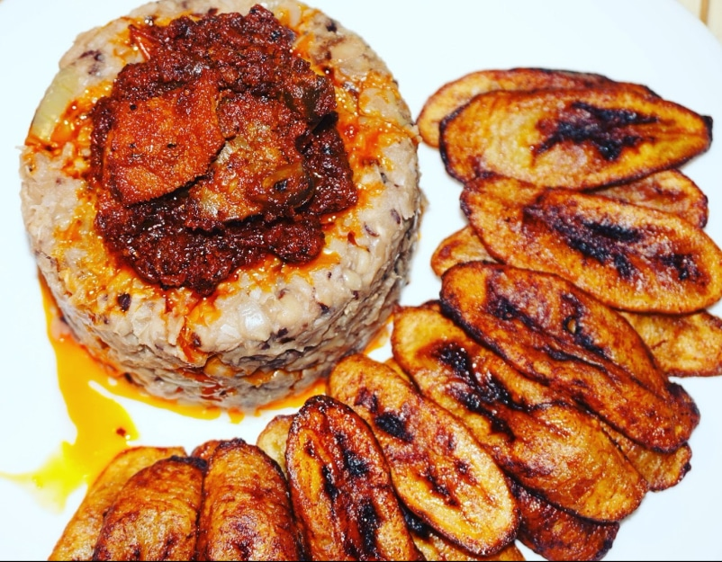
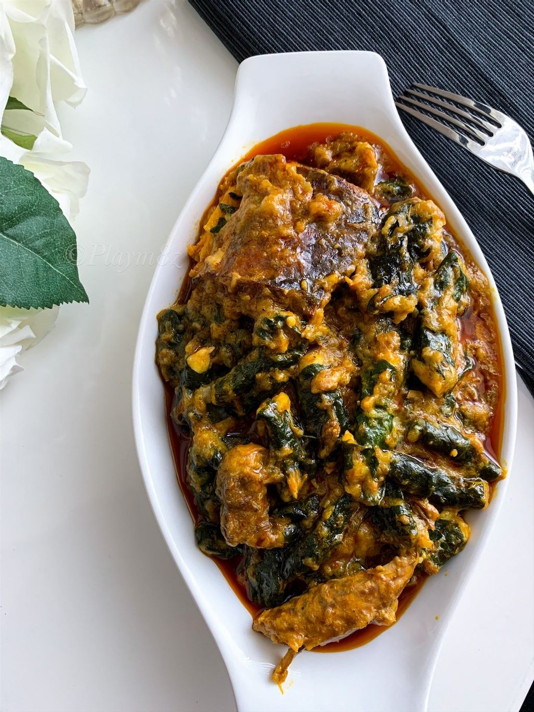

The North Central is the one of the six geopolitical zones of Nigeria representing the majority of the country's Middle Belt.


- Niger
- Nasarawa
- Plateau
- Kogi
- kwara
- Benue
The North Central is the one of the six geopolitical zones of Nigeria representing the majority of the country's Middle Belt.
The North East is the one of the six geopolitical zones of Nigeria representing both a geographic and political region of the country's northeast.


The North West is the one of the six geopolitical zones of Nigeria representing both a geographic and political region of the country's northwest.


The South West is the one of the six geopolitical zones of Nigeria representing both a geographic and political region of the country's southwest.

The South East is the one of the six geopolitical zones of Nigeria representing both a geographic and political region of the country's inland southeast.


The South South is one of the six geopolitical zones of Nigeria representing both a geographic and political region of the country's eastern coast.
